Wer Ordnung hält, ist nur zu faul zum Suchen.(If you keep things tidily ordered, you’re just too lazy to go searching.)German proverb
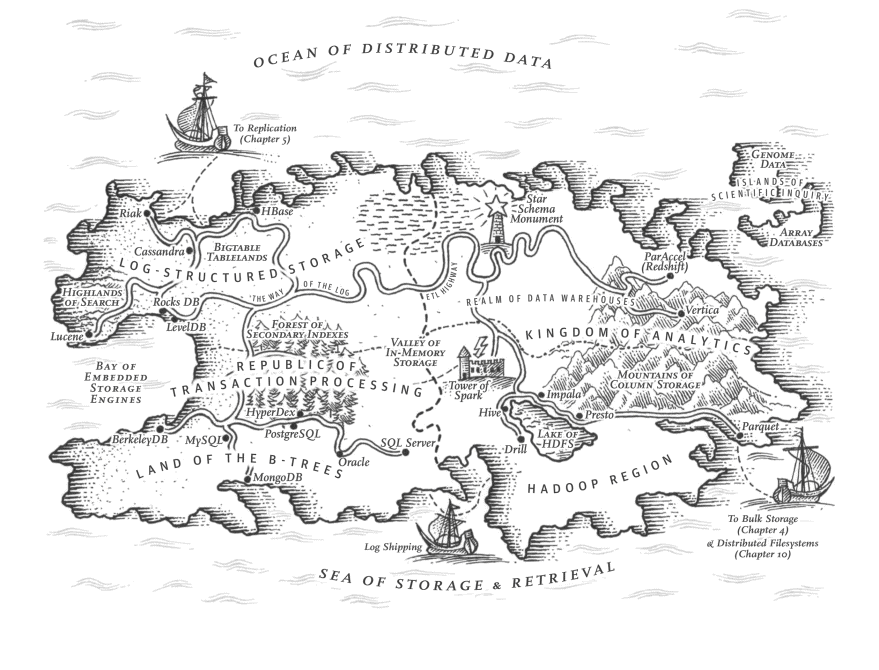
On the most fundamental level, a database needs to do two things: when you give it some data, it should store the data, and when you ask it again later, it should give the data back to you.
In Chapter 2 we discussed data models and query languages — i.e., the format in which you (the application developer) give the database your data, and the mechanism by which you can ask for it again later. In this chapter we discuss the same from the database’s point of view: how we can store the data that we’re given, and how we can find it again when we’re asked for it.
Why should you, as an application developer, care how the database handles storage and retrieval internally? You’re probably not going to implement your own storage engine from scratch, but you do need to select a storage engine that is appropriate for your application, from the many that are available. In order to tune a storage engine to perform well on your kind of workload, you need to have a rough idea of what the storage engine is doing under the hood.
In particular, there is a big difference between storage engines that are optimized for transactional workloads and those that are optimized for analytics. We will explore that distinction later in “Transaction Processing or Analytics?” , and in “Column-Oriented Storage” we’ll discuss a family of storage engines that is optimized for analytics.
However, first we’ll start this chapter by talking about storage engines that are used in the kinds of databases that you’re probably familiar with: traditional relational databases, and also most so-called NoSQL databases. We will examine two families of storage engines: log-structured storage engines, and page-oriented storage engines such as B-trees.
Consider the world’s simplest database, implemented as two Bash functions:
#!/bin/bashdb_set(){echo"$1,$2">> database}db_get(){grep"^$1,"database|sed -e"s/^$1,//"|tail -n 1}
These two functions implement a key-value store. You can call db_set key value
, which will store key
and value
in the database. The key and value can be (almost) anything you like — for example, the value could be a JSON document. You can then call db_get key
, which looks up the most recent value associated with that particular key and returns it.
And it works:
$ db_set 123456 '{"name":"London","attractions":["Big Ben","London Eye"]}'
$ db_set 42 '{"name":"San Francisco","attractions":["Golden Gate Bridge"]}'
$ db_get 42
{"name":"San Francisco","attractions":["Golden Gate Bridge"]}
The underlying storage format is very simple: a text file where each line contains a key-value pair, separated by a comma (roughly like a CSV file, ignoring escaping issues). Every call to db_set
appends to the end of the file, so if you update a key several times, the old versions of the value are not overwritten — you need to look at the last occurrence of a key in a file to find the latest value (hence the tail -n 1
in db_get
):
$ db_set 42 '{"name":"San Francisco","attractions":["Exploratorium"]}'
$ db_get 42
{"name":"San Francisco","attractions":["Exploratorium"]}
$ cat database
123456,{"name":"London","attractions":["Big Ben","London Eye"]}
42,{"name":"San Francisco","attractions":["Golden Gate Bridge"]}
42,{"name":"San Francisco","attractions":["Exploratorium"]}
Our db_set
function actually has pretty good performance for something that is so simple, because appending to a file is generally very efficient. Similarly to what db_set
does, many databases internally use a log
, which is an append-only data file. Real databases have more issues to deal with (such as concurrency control, reclaiming disk space so that the log doesn’t grow forever, and handling errors and partially written records), but the basic principle is the same. Logs are incredibly useful, and we will encounter them several times in the rest of this book.
The word log is often used to refer to application logs, where an application outputs text that describes what’s happening. In this book, log is used in the more general sense: an append-only sequence of records. It doesn’t have to be human-readable; it might be binary and intended only for other programs to read.
On the other hand, our db_get
function has terrible performance if you have a large number of records in your database. Every time you want to look up a key, db_get
has to scan the entire database file from beginning to end, looking for occurrences of the key. In algorithmic terms, the cost of a lookup is O
(n
): if you double the number of records n
in your database, a lookup takes twice as long. That’s not good.
In order to efficiently find the value for a particular key in the database, we need a different data structure: an index . In this chapter we will look at a range of indexing structures and see how they compare; the general idea behind them is to keep some additional metadata on the side, which acts as a signpost and helps you to locate the data you want. If you want to search the same data in several different ways, you may need several different indexes on different parts of the data.
An index is an additional structure that is derived from the primary data. Many databases allow you to add and remove indexes, and this doesn’t affect the contents of the database; it only affects the performance of queries. Maintaining additional structures incurs overhead, especially on writes. For writes, it’s hard to beat the performance of simply appending to a file, because that’s the simplest possible write operation. Any kind of index usually slows down writes, because the index also needs to be updated every time data is written.
This is an important trade-off in storage systems: well-chosen indexes speed up read queries, but every index slows down writes. For this reason, databases don’t usually index everything by default, but require you — the application developer or database administrator — to choose indexes manually, using your knowledge of the application’s typical query patterns. You can then choose the indexes that give your application the greatest benefit, without introducing more overhead than necessary.
Let’s start with indexes for key-value data. This is not the only kind of data you can index, but it’s very common, and it’s a useful building block for more complex indexes.
Key-value stores are quite similar to the dictionary type that you can find in most programming languages, and which is usually implemented as a hash map (hash table). Hash maps are described in many algorithms textbooks [1 , 2 ], so we won’t go into detail of how they work here. Since we already have hash maps for our in-memory data structures, why not use them to index our data on disk?
Let’s say our data storage consists only of appending to a file, as in the preceding example. Then the simplest possible indexing strategy is this: keep an in-memory hash map where every key is mapped to a byte offset in the data file — the location at which the value can be found, as illustrated in Figure 3-1 . Whenever you append a new key-value pair to the file, you also update the hash map to reflect the offset of the data you just wrote (this works both for inserting new keys and for updating existing keys). When you want to look up a value, use the hash map to find the offset in the data file, seek to that location, and read the value.
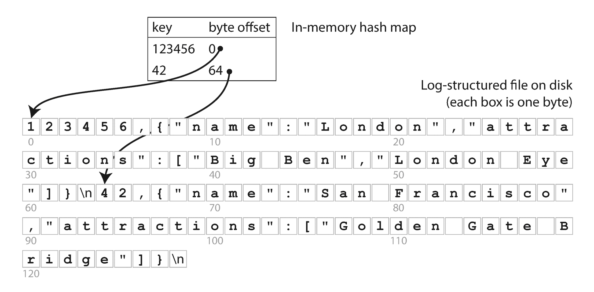
This may sound simplistic, but it is a viable approach. In fact, this is essentially what Bitcask (the default storage engine in Riak) does [3 ]. Bitcask offers high-performance reads and writes, subject to the requirement that all the keys fit in the available RAM, since the hash map is kept completely in memory. The values can use more space than there is available memory, since they can be loaded from disk with just one disk seek. If that part of the data file is already in the filesystem cache, a read doesn’t require any disk I/O at all.
A storage engine like Bitcask is well suited to situations where the value for each key is updated frequently. For example, the key might be the URL of a cat video, and the value might be the number of times it has been played (incremented every time someone hits the play button). In this kind of workload, there are a lot of writes, but there are not too many distinct keys — you have a large number of writes per key, but it’s feasible to keep all keys in memory.
As described so far, we only ever append to a file — so how do we avoid eventually running out of disk space? A good solution is to break the log into segments of a certain size by closing a segment file when it reaches a certain size, and making subsequent writes to a new segment file. We can then perform compaction on these segments, as illustrated in Figure 3-2 . Compaction means throwing away duplicate keys in the log, and keeping only the most recent update for each key.
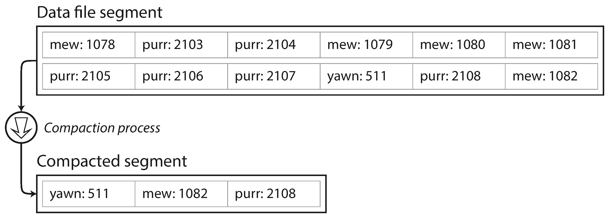
Moreover, since compaction often makes segments much smaller (assuming that a key is overwritten several times on average within one segment), we can also merge several segments together at the same time as performing the compaction, as shown in Figure 3-3 . Segments are never modified after they have been written, so the merged segment is written to a new file. The merging and compaction of frozen segments can be done in a background thread, and while it is going on, we can still continue to serve read and write requests as normal, using the old segment files. After the merging process is complete, we switch read requests to using the new merged segment instead of the old segments — and then the old segment files can simply be deleted.
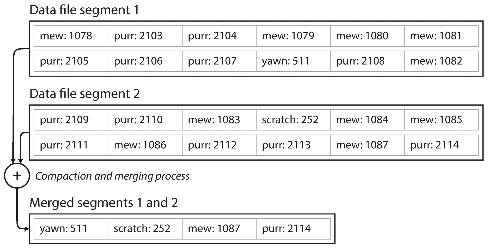
Each segment now has its own in-memory hash table, mapping keys to file offsets. In order to find the value for a key, we first check the most recent segment’s hash map; if the key is not present we check the second-most-recent segment, and so on. The merging process keeps the number of segments small, so lookups don’t need to check many hash maps.
Lots of detail goes into making this simple idea work in practice. Briefly, some of the issues that are important in a real implementation are:
CSV is not the best format for a log. It’s faster and simpler to use a binary format that first encodes the length of a string in bytes, followed by the raw string (without need for escaping).
If the database is restarted, the in-memory hash maps are lost. In principle, you can restore each segment’s hash map by reading the entire segment file from beginning to end and noting the offset of the most recent value for every key as you go along. However, that might take a long time if the segment files are large, which would make server restarts painful. Bitcask speeds up recovery by storing a snapshot of each segment’s hash map on disk, which can be loaded into memory more quickly.
The database may crash at any time, including halfway through appending a record to the log. Bitcask files include checksums, allowing such corrupted parts of the log to be detected and ignored.
As writes are appended to the log in a strictly sequential order, a common implementation choice is to have only one writer thread. Data file segments are append-only and otherwise immutable, so they can be read concurrently by multiple threads.
An append-only log seems wasteful at first glance: why don’t you update the file in place, overwriting the old value with the new value? But an append-only design turns out to be good for several reasons:
However, the hash table index also has limitations:
kitty00000
and kitty99999
— you’d have to look up each key individually in the hash maps.In the next section we will look at an indexing structure that doesn’t have those limitations.
In Figure 3-3 , each log-structured storage segment is a sequence of key-value pairs. These pairs appear in the order that they were written, and values later in the log take precedence over values for the same key earlier in the log. Apart from that, the order of key-value pairs in the file does not matter.
Now we can make a simple change to the format of our segment files: we require that the sequence of key-value pairs is sorted by key . At first glance, that requirement seems to break our ability to use sequential writes, but we’ll get to that in a moment.
We call this format Sorted String Table , or SSTable for short. We also require that each key only appears once within each merged segment file (the compaction process already ensures that). SSTables have several big advantages over log segments with hash indexes:
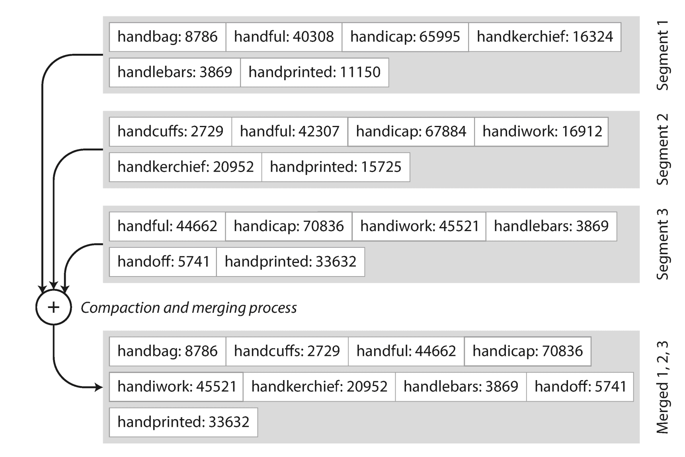
handiwork
, but you don’t know the exact offset of that key in the segment file. However, you do know the offsets for the keys handbag
and handsome
, and because of the sorting you know that handiwork
must appear between those two. This means you can jump to the offset for handbag
and scan from there until you find handiwork
(or not, if the key is not present in the file).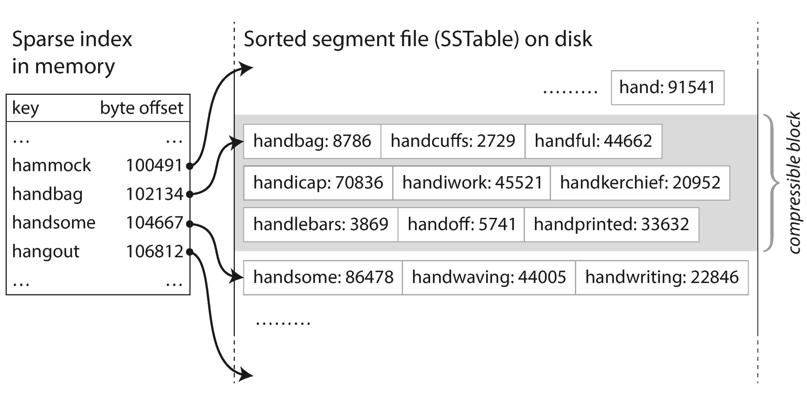
Fine so far — but how do you get your data to be sorted by key in the first place? Our incoming writes can occur in any order.
Maintaining a sorted structure on disk is possible (see “B-Trees” ), but maintaining it in memory is much easier. There are plenty of well-known tree data structures that you can use, such as red-black trees or AVL trees [2 ]. With these data structures, you can insert keys in any order and read them back in sorted order.
We can now make our storage engine work as follows:
This scheme works very well. It only suffers from one problem: if the database crashes, the most recent writes (which are in the memtable but not yet written out to disk) are lost. In order to avoid that problem, we can keep a separate log on disk to which every write is immediately appended, just like in the previous section. That log is not in sorted order, but that doesn’t matter, because its only purpose is to restore the memtable after a crash. Every time the memtable is written out to an SSTable, the corresponding log can be discarded.
The algorithm described here is essentially what is used in LevelDB [6 ] and RocksDB [7 ], key-value storage engine libraries that are designed to be embedded into other applications. Among other things, LevelDB can be used in Riak as an alternative to Bitcask. Similar storage engines are used in Cassandra and HBase [8 ], both of which were inspired by Google’s Bigtable paper [9 ] (which introduced the terms SSTable and memtable ).
Originally this indexing structure was described by Patrick O’Neil et al. under the name Log-Structured Merge-Tree (or LSM-Tree) [10 ], building on earlier work on log-structured filesystems [11 ]. Storage engines that are based on this principle of merging and compacting sorted files are often called LSM storage engines.
Lucene, an indexing engine for full-text search used by Elasticsearch and Solr, uses a similar method for storing its term dictionary [12 , 13 ]. A full-text index is much more complex than a key-value index but is based on a similar idea: given a word in a search query, find all the documents (web pages, product descriptions, etc.) that mention the word. This is implemented with a key-value structure where the key is a word (a term ) and the value is the list of IDs of all the documents that contain the word (the postings list ). In Lucene, this mapping from term to postings list is kept in SSTable-like sorted files, which are merged in the background as needed [14 ].
As always, a lot of detail goes into making a storage engine perform well in practice. For example, the LSM-tree algorithm can be slow when looking up keys that do not exist in the database: you have to check the memtable, then the segments all the way back to the oldest (possibly having to read from disk for each one) before you can be sure that the key does not exist. In order to optimize this kind of access, storage engines often use additional Bloom filters [15 ]. (A Bloom filter is a memory-efficient data structure for approximating the contents of a set. It can tell you if a key does not appear in the database, and thus saves many unnecessary disk reads for nonexistent keys.)
There are also different strategies to determine the order and timing of how SSTables are compacted and merged. The most common options are size-tiered and leveled compaction. LevelDB and RocksDB use leveled compaction (hence the name of LevelDB), HBase uses size-tiered, and Cassandra supports both [16 ]. In size-tiered compaction, newer and smaller SSTables are successively merged into older and larger SSTables. In leveled compaction, the key range is split up into smaller SSTables and older data is moved into separate “levels,” which allows the compaction to proceed more incrementally and use less disk space.
Even though there are many subtleties, the basic idea of LSM-trees — keeping a cascade of SSTables that are merged in the background — is simple and effective. Even when the dataset is much bigger than the available memory it continues to work well. Since data is stored in sorted order, you can efficiently perform range queries (scanning all keys above some minimum and up to some maximum), and because the disk writes are sequential the LSM-tree can support remarkably high write throughput.
The log-structured indexes we have discussed so far are gaining acceptance, but they are not the most common type of index. The most widely used indexing structure is quite different: the B-tree .
Introduced in 1970 [17 ] and called “ubiquitous” less than 10 years later [18 ], B-trees have stood the test of time very well. They remain the standard index implementation in almost all relational databases, and many nonrelational databases use them too.
Like SSTables, B-trees keep key-value pairs sorted by key, which allows efficient key-value lookups and range queries. But that’s where the similarity ends: B-trees have a very different design philosophy.
The log-structured indexes we saw earlier break the database down into variable-size segments , typically several megabytes or more in size, and always write a segment sequentially. By contrast, B-trees break the database down into fixed-size blocks or pages , traditionally 4 KB in size (sometimes bigger), and read or write one page at a time. This design corresponds more closely to the underlying hardware, as disks are also arranged in fixed-size blocks.
Each page can be identified using an address or location, which allows one page to refer to another — similar to a pointer, but on disk instead of in memory. We can use these page references to construct a tree of pages, as illustrated in Figure 3-6 .
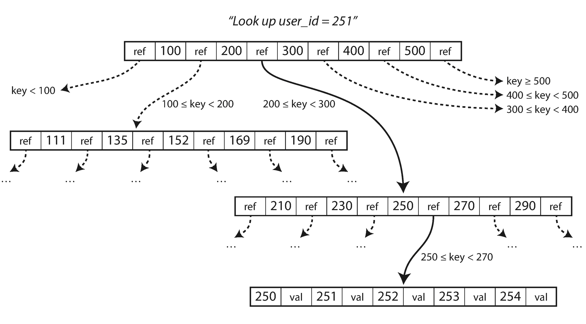
One page is designated as the root of the B-tree; whenever you want to look up a key in the index, you start here. The page contains several keys and references to child pages. Each child is responsible for a continuous range of keys, and the keys between the references indicate where the boundaries between those ranges lie.
In the example in Figure 3-6 , we are looking for the key 251, so we know that we need to follow the page reference between the boundaries 200 and 300. That takes us to a similar-looking page that further breaks down the 200–300 range into subranges. Eventually we get down to a page containing individual keys (a leaf page ), which either contains the value for each key inline or contains references to the pages where the values can be found.
The number of references to child pages in one page of the B-tree is called the branching factor . For example, in Figure 3-6 the branching factor is six. In practice, the branching factor depends on the amount of space required to store the page references and the range boundaries, but typically it is several hundred.
If you want to update the value for an existing key in a B-tree, you search for the leaf page containing that key, change the value in that page, and write the page back to disk (any references to that page remain valid). If you want to add a new key, you need to find the page whose range encompasses the new key and add it to that page. If there isn’t enough free space in the page to accommodate the new key, it is split into two half-full pages, and the parent page is updated to account for the new subdivision of key ranges — see Figure 3-7 . ii
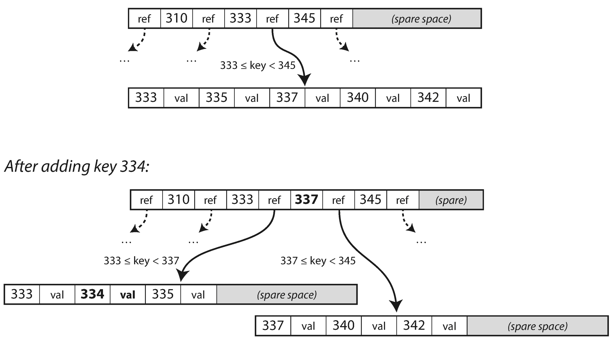
This algorithm ensures that the tree remains balanced : a B-tree with n keys always has a depth of O (log n ). Most databases can fit into a B-tree that is three or four levels deep, so you don’t need to follow many page references to find the page you are looking for. (A four-level tree of 4 KB pages with a branching factor of 500 can store up to 256 TB.)
The basic underlying write operation of a B-tree is to overwrite a page on disk with new data. It is assumed that the overwrite does not change the location of the page; i.e., all references to that page remain intact when the page is overwritten. This is in stark contrast to log-structured indexes such as LSM-trees, which only append to files (and eventually delete obsolete files) but never modify files in place.
You can think of overwriting a page on disk as an actual hardware operation. On a magnetic hard drive, this means moving the disk head to the right place, waiting for the right position on the spinning platter to come around, and then overwriting the appropriate sector with new data. On SSDs, what happens is somewhat more complicated, due to the fact that an SSD must erase and rewrite fairly large blocks of a storage chip at a time [19 ].
Moreover, some operations require several different pages to be overwritten. For example, if you split a page because an insertion caused it to be overfull, you need to write the two pages that were split, and also overwrite their parent page to update the references to the two child pages. This is a dangerous operation, because if the database crashes after only some of the pages have been written, you end up with a corrupted index (e.g., there may be an orphan page that is not a child of any parent).
In order to make the database resilient to crashes, it is common for B-tree implementations to include an additional data structure on disk: a write-ahead log (WAL, also known as a redo log ). This is an append-only file to which every B-tree modification must be written before it can be applied to the pages of the tree itself. When the database comes back up after a crash, this log is used to restore the B-tree back to a consistent state [5 , 20 ].
An additional complication of updating pages in place is that careful concurrency control is required if multiple threads are going to access the B-tree at the same time — otherwise a thread may see the tree in an inconsistent state. This is typically done by protecting the tree’s data structures with latches (lightweight locks). Log-structured approaches are simpler in this regard, because they do all the merging in the background without interfering with incoming queries and atomically swap old segments for new segments from time to time.
As B-trees have been around for so long, it’s not surprising that many optimizations have been developed over the years. To mention just a few:
Even though B-tree implementations are generally more mature than LSM-tree implementations, LSM-trees are also interesting due to their performance characteristics. As a rule of thumb, LSM-trees are typically faster for writes, whereas B-trees are thought to be faster for reads [23 ]. Reads are typically slower on LSM-trees because they have to check several different data structures and SSTables at different stages of compaction.
However, benchmarks are often inconclusive and sensitive to details of the workload. You need to test systems with your particular workload in order to make a valid comparison. In this section we will briefly discuss a few things that are worth considering when measuring the performance of a storage engine.
A B-tree index must write every piece of data at least twice: once to the write-ahead log, and once to the tree page itself (and perhaps again as pages are split). There is also overhead from having to write an entire page at a time, even if only a few bytes in that page changed. Some storage engines even overwrite the same page twice in order to avoid ending up with a partially updated page in the event of a power failure [24 , 25 ].
Log-structured indexes also rewrite data multiple times due to repeated compaction and merging of SSTables. This effect — one write to the database resulting in multiple writes to the disk over the course of the database’s lifetime — is known as write amplification . It is of particular concern on SSDs, which can only overwrite blocks a limited number of times before wearing out.
In write-heavy applications, the performance bottleneck might be the rate at which the database can write to disk. In this case, write amplification has a direct performance cost: the more that a storage engine writes to disk, the fewer writes per second it can handle within the available disk bandwidth.
Moreover, LSM-trees are typically able to sustain higher write throughput than B-trees, partly because they sometimes have lower write amplification (although this depends on the storage engine configuration and workload), and partly because they sequentially write compact SSTable files rather than having to overwrite several pages in the tree [26 ]. This difference is particularly important on magnetic hard drives, where sequential writes are much faster than random writes.
LSM-trees can be compressed better, and thus often produce smaller files on disk than B-trees. B-tree storage engines leave some disk space unused due to fragmentation: when a page is split or when a row cannot fit into an existing page, some space in a page remains unused. Since LSM-trees are not page-oriented and periodically rewrite SSTables to remove fragmentation, they have lower storage overheads, especially when using leveled compaction [27 ].
On many SSDs, the firmware internally uses a log-structured algorithm to turn random writes into sequential writes on the underlying storage chips, so the impact of the storage engine’s write pattern is less pronounced [19 ]. However, lower write amplification and reduced fragmentation are still advantageous on SSDs: representing data more compactly allows more read and write requests within the available I/O bandwidth.
A downside of log-structured storage is that the compaction process can sometimes interfere with the performance of ongoing reads and writes. Even though storage engines try to perform compaction incrementally and without affecting concurrent access, disks have limited resources, so it can easily happen that a request needs to wait while the disk finishes an expensive compaction operation. The impact on throughput and average response time is usually small, but at higher percentiles (see “Describing Performance” ) the response time of queries to log-structured storage engines can sometimes be quite high, and B-trees can be more predictable [28 ].
Another issue with compaction arises at high write throughput: the disk’s finite write bandwidth needs to be shared between the initial write (logging and flushing a memtable to disk) and the compaction threads running in the background. When writing to an empty database, the full disk bandwidth can be used for the initial write, but the bigger the database gets, the more disk bandwidth is required for compaction.
If write throughput is high and compaction is not configured carefully, it can happen that compaction cannot keep up with the rate of incoming writes. In this case, the number of unmerged segments on disk keeps growing until you run out of disk space, and reads also slow down because they need to check more segment files. Typically, SSTable-based storage engines do not throttle the rate of incoming writes, even if compaction cannot keep up, so you need explicit monitoring to detect this situation [29 , 30 ].
An advantage of B-trees is that each key exists in exactly one place in the index, whereas a log-structured storage engine may have multiple copies of the same key in different segments. This aspect makes B-trees attractive in databases that want to offer strong transactional semantics: in many relational databases, transaction isolation is implemented using locks on ranges of keys, and in a B-tree index, those locks can be directly attached to the tree [5 ]. In Chapter 7 we will discuss this point in more detail.
B-trees are very ingrained in the architecture of databases and provide consistently good performance for many workloads, so it’s unlikely that they will go away anytime soon. In new datastores, log-structured indexes are becoming increasingly popular. There is no quick and easy rule for determining which type of storage engine is better for your use case, so it is worth testing empirically.
So far we have only discussed key-value indexes, which are like a primary key index in the relational model. A primary key uniquely identifies one row in a relational table, or one document in a document database, or one vertex in a graph database. Other records in the database can refer to that row/document/vertex by its primary key (or ID), and the index is used to resolve such references.
It is also very common to have secondary indexes
. In relational databases, you can create several secondary indexes on the same table using the CREATE INDEX
command, and they are often crucial for performing joins efficiently. For example, in Figure 2-1
in Chapter 2
you would most likely have a secondary index on the user_id
columns so that you can find all the rows belonging to the same user in each of the tables.
A secondary index can easily be constructed from a key-value index. The main difference is that keys are not unique; i.e., there might be many rows (documents, vertices) with the same key. This can be solved in two ways: either by making each value in the index a list of matching row identifiers (like a postings list in a full-text index) or by making each key unique by appending a row identifier to it. Either way, both B-trees and log-structured indexes can be used as secondary indexes.
The key in an index is the thing that queries search for, but the value can be one of two things: it could be the actual row (document, vertex) in question, or it could be a reference to the row stored elsewhere. In the latter case, the place where rows are stored is known as a heap file , and it stores data in no particular order (it may be append-only, or it may keep track of deleted rows in order to overwrite them with new data later). The heap file approach is common because it avoids duplicating data when multiple secondary indexes are present: each index just references a location in the heap file, and the actual data is kept in one place.
When updating a value without changing the key, the heap file approach can be quite efficient: the record can be overwritten in place, provided that the new value is not larger than the old value. The situation is more complicated if the new value is larger, as it probably needs to be moved to a new location in the heap where there is enough space. In that case, either all indexes need to be updated to point at the new heap location of the record, or a forwarding pointer is left behind in the old heap location [5 ].
In some situations, the extra hop from the index to the heap file is too much of a performance penalty for reads, so it can be desirable to store the indexed row directly within an index. This is known as a clustered index . For example, in MySQL’s InnoDB storage engine, the primary key of a table is always a clustered index, and secondary indexes refer to the primary key (rather than a heap file location) [31 ]. In SQL Server, you can specify one clustered index per table [32 ].
A compromise between a clustered index (storing all row data within the index) and a nonclustered index (storing only references to the data within the index) is known as a covering index or index with included columns , which stores some of a table’s columns within the index [33 ]. This allows some queries to be answered by using the index alone (in which case, the index is said to cover the query) [32 ].
As with any kind of duplication of data, clustered and covering indexes can speed up reads, but they require additional storage and can add overhead on writes. Databases also need to go to additional effort to enforce transactional guarantees, because applications should not see inconsistencies due to the duplication.
The indexes discussed so far only map a single key to a value. That is not sufficient if we need to query multiple columns of a table (or multiple fields in a document) simultaneously.
The most common type of multi-column index is called a concatenated index , which simply combines several fields into one key by appending one column to another (the index definition specifies in which order the fields are concatenated). This is like an old-fashioned paper phone book, which provides an index from (lastname , firstname ) to phone number. Due to the sort order, the index can be used to find all the people with a particular last name, or all the people with a particular lastname-firstname combination. However, the index is useless if you want to find all the people with a particular first name.
Multi-dimensional indexes are a more general way of querying several columns at once, which is particularly important for geospatial data. For example, a restaurant-search website may have a database containing the latitude and longitude of each restaurant. When a user is looking at the restaurants on a map, the website needs to search for all the restaurants within the rectangular map area that the user is currently viewing. This requires a two-dimensional range query like the following:
SELECT*FROMrestaurantsWHERElatitude>51.4946ANDlatitude<51.5079ANDlongitude>-0.1162ANDlongitude<-0.1004;
A standard B-tree or LSM-tree index is not able to answer that kind of query efficiently: it can give you either all the restaurants in a range of latitudes (but at any longitude), or all the restaurants in a range of longitudes (but anywhere between the North and South poles), but not both simultaneously.
One option is to translate a two-dimensional location into a single number using a space-filling curve, and then to use a regular B-tree index [34 ]. More commonly, specialized spatial indexes such as R-trees are used. For example, PostGIS implements geospatial indexes as R-trees using PostgreSQL’s Generalized Search Tree indexing facility [35 ]. We don’t have space to describe R-trees in detail here, but there is plenty of literature on them.
An interesting idea is that multi-dimensional indexes are not just for geographic locations. For example, on an ecommerce website you could use a three-dimensional index on the dimensions (red , green , blue ) to search for products in a certain range of colors, or in a database of weather observations you could have a two-dimensional index on (date , temperature ) in order to efficiently search for all the observations during the year 2013 where the temperature was between 25 and 30℃. With a one-dimensional index, you would have to either scan over all the records from 2013 (regardless of temperature) and then filter them by temperature, or vice versa. A 2D index could narrow down by timestamp and temperature simultaneously. This technique is used by HyperDex [36 ].
All the indexes discussed so far assume that you have exact data and allow you to query for exact values of a key, or a range of values of a key with a sort order. What they don’t allow you to do is search for similar keys, such as misspelled words. Such fuzzy querying requires different techniques.
For example, full-text search engines commonly allow a search for one word to be expanded to include synonyms of the word, to ignore grammatical variations of words, and to search for occurrences of words near each other in the same document, and support various other features that depend on linguistic analysis of the text. To cope with typos in documents or queries, Lucene is able to search text for words within a certain edit distance (an edit distance of 1 means that one letter has been added, removed, or replaced) [37 ].
As mentioned in “Making an LSM-tree out of SSTables” , Lucene uses a SSTable-like structure for its term dictionary. This structure requires a small in-memory index that tells queries at which offset in the sorted file they need to look for a key. In LevelDB, this in-memory index is a sparse collection of some of the keys, but in Lucene, the in-memory index is a finite state automaton over the characters in the keys, similar to a trie [38 ]. This automaton can be transformed into a Levenshtein automaton , which supports efficient search for words within a given edit distance [39 ].
Other fuzzy search techniques go in the direction of document classification and machine learning. See an information retrieval textbook for more detail [e.g., 40 ].
The data structures discussed so far in this chapter have all been answers to the limitations of disks. Compared to main memory, disks are awkward to deal with. With both magnetic disks and SSDs, data on disk needs to be laid out carefully if you want good performance on reads and writes. However, we tolerate this awkwardness because disks have two significant advantages: they are durable (their contents are not lost if the power is turned off), and they have a lower cost per gigabyte than RAM.
As RAM becomes cheaper, the cost-per-gigabyte argument is eroded. Many datasets are simply not that big, so it’s quite feasible to keep them entirely in memory, potentially distributed across several machines. This has led to the development of in-memory databases .
Some in-memory key-value stores, such as Memcached, are intended for caching use only, where it’s acceptable for data to be lost if a machine is restarted. But other in-memory databases aim for durability, which can be achieved with special hardware (such as battery-powered RAM), by writing a log of changes to disk, by writing periodic snapshots to disk, or by replicating the in-memory state to other machines.
When an in-memory database is restarted, it needs to reload its state, either from disk or over the network from a replica (unless special hardware is used). Despite writing to disk, it’s still an in-memory database, because the disk is merely used as an append-only log for durability, and reads are served entirely from memory. Writing to disk also has operational advantages: files on disk can easily be backed up, inspected, and analyzed by external utilities.
Products such as VoltDB, MemSQL, and Oracle TimesTen are in-memory databases with a relational model, and the vendors claim that they can offer big performance improvements by removing all the overheads associated with managing on-disk data structures [41 , 42 ]. RAMCloud is an open source, in-memory key-value store with durability (using a log-structured approach for the data in memory as well as the data on disk) [43 ]. Redis and Couchbase provide weak durability by writing to disk asynchronously.
Counterintuitively, the performance advantage of in-memory databases is not due to the fact that they don’t need to read from disk. Even a disk-based storage engine may never need to read from disk if you have enough memory, because the operating system caches recently used disk blocks in memory anyway. Rather, they can be faster because they can avoid the overheads of encoding in-memory data structures in a form that can be written to disk [44 ].
Besides performance, another interesting area for in-memory databases is providing data models that are difficult to implement with disk-based indexes. For example, Redis offers a database-like interface to various data structures such as priority queues and sets. Because it keeps all data in memory, its implementation is comparatively simple.
Recent research indicates that an in-memory database architecture could be extended to support datasets larger than the available memory, without bringing back the overheads of a disk-centric architecture [45 ]. The so-called anti-caching approach works by evicting the least recently used data from memory to disk when there is not enough memory, and loading it back into memory when it is accessed again in the future. This is similar to what operating systems do with virtual memory and swap files, but the database can manage memory more efficiently than the OS, as it can work at the granularity of individual records rather than entire memory pages. This approach still requires indexes to fit entirely in memory, though (like the Bitcask example at the beginning of the chapter).
Further changes to storage engine design will probably be needed if non-volatile memory (NVM) technologies become more widely adopted [46 ]. At present, this is a new area of research, but it is worth keeping an eye on in the future.
In the early days of business data processing, a write to the database typically corresponded to a commercial transaction taking place: making a sale, placing an order with a supplier, paying an employee’s salary, etc. As databases expanded into areas that didn’t involve money changing hands, the term transaction nevertheless stuck, referring to a group of reads and writes that form a logical unit.
A transaction needn’t necessarily have ACID (atomicity, consistency, isolation, and durability) properties. Transaction processing just means allowing clients to make low-latency reads and writes — as opposed to batch processing jobs, which only run periodically (for example, once per day). We discuss the ACID properties in Chapter 7 and batch processing in Chapter 10 .
Even though databases started being used for many different kinds of data — comments on blog posts, actions in a game, contacts in an address book, etc. — the basic access pattern remained similar to processing business transactions. An application typically looks up a small number of records by some key, using an index. Records are inserted or updated based on the user’s input. Because these applications are interactive, the access pattern became known as online transaction processing (OLTP).
However, databases also started being increasingly used for data analytics , which has very different access patterns. Usually an analytic query needs to scan over a huge number of records, only reading a few columns per record, and calculates aggregate statistics (such as count, sum, or average) rather than returning the raw data to the user. For example, if your data is a table of sales transactions, then analytic queries might be:
These queries are often written by business analysts, and feed into reports that help the management of a company make better decisions (business intelligence ). In order to differentiate this pattern of using databases from transaction processing, it has been called online analytic processing (OLAP) [47 ]. iv The difference between OLTP and OLAP is not always clear-cut, but some typical characteristics are listed in Table 3-1 .
| Property | Transaction processing systems (OLTP) | Analytic systems (OLAP) |
|---|---|---|
|
Main read pattern |
Small number of records per query, fetched by key |
Aggregate over large number of records |
|
Main write pattern |
Random-access, low-latency writes from user input |
Bulk import (ETL) or event stream |
|
Primarily used by |
End user/customer, via web application |
Internal analyst, for decision support |
|
What data represents |
Latest state of data (current point in time) |
History of events that happened over time |
|
Dataset size |
Gigabytes to terabytes |
Terabytes to petabytes |
At first, the same databases were used for both transaction processing and analytic queries. SQL turned out to be quite flexible in this regard: it works well for OLTP-type queries as well as OLAP-type queries. Nevertheless, in the late 1980s and early 1990s, there was a trend for companies to stop using their OLTP systems for analytics purposes, and to run the analytics on a separate database instead. This separate database was called a data warehouse .
An enterprise may have dozens of different transaction processing systems: systems powering the customer-facing website, controlling point of sale (checkout) systems in physical stores, tracking inventory in warehouses, planning routes for vehicles, managing suppliers, administering employees, etc. Each of these systems is complex and needs a team of people to maintain it, so the systems end up operating mostly autonomously from each other.
These OLTP systems are usually expected to be highly available and to process transactions with low latency, since they are often critical to the operation of the business. Database administrators therefore closely guard their OLTP databases. They are usually reluctant to let business analysts run ad hoc analytic queries on an OLTP database, since those queries are often expensive, scanning large parts of the dataset, which can harm the performance of concurrently executing transactions.
A data warehouse , by contrast, is a separate database that analysts can query to their hearts’ content, without affecting OLTP operations [48 ]. The data warehouse contains a read-only copy of the data in all the various OLTP systems in the company. Data is extracted from OLTP databases (using either a periodic data dump or a continuous stream of updates), transformed into an analysis-friendly schema, cleaned up, and then loaded into the data warehouse. This process of getting data into the warehouse is known as Extract–Transform–Load (ETL) and is illustrated in Figure 3-8 .
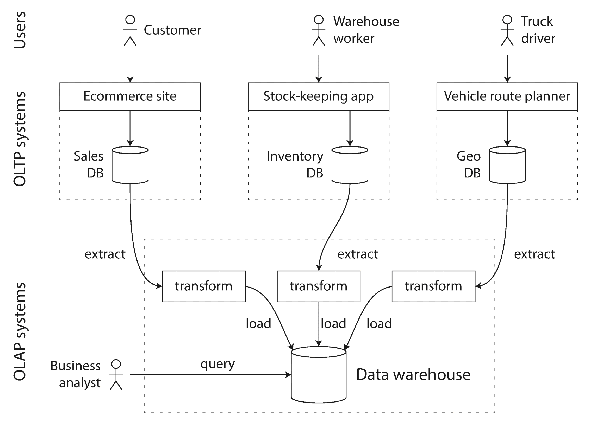
Data warehouses now exist in almost all large enterprises, but in small companies they are almost unheard of. This is probably because most small companies don’t have so many different OLTP systems, and most small companies have a small amount of data — small enough that it can be queried in a conventional SQL database, or even analyzed in a spreadsheet. In a large company, a lot of heavy lifting is required to do something that is simple in a small company.
A big advantage of using a separate data warehouse, rather than querying OLTP systems directly for analytics, is that the data warehouse can be optimized for analytic access patterns. It turns out that the indexing algorithms discussed in the first half of this chapter work well for OLTP, but are not very good at answering analytic queries. In the rest of this chapter we will look at storage engines that are optimized for analytics instead.
The data model of a data warehouse is most commonly relational, because SQL is generally a good fit for analytic queries. There are many graphical data analysis tools that generate SQL queries, visualize the results, and allow analysts to explore the data (through operations such as drill-down and slicing and dicing ).
On the surface, a data warehouse and a relational OLTP database look similar, because they both have a SQL query interface. However, the internals of the systems can look quite different, because they are optimized for very different query patterns. Many database vendors now focus on supporting either transaction processing or analytics workloads, but not both.
Some databases, such as Microsoft SQL Server and SAP HANA, have support for transaction processing and data warehousing in the same product. However, they are increasingly becoming two separate storage and query engines, which happen to be accessible through a common SQL interface [49 , 50 , 51 ].
Data warehouse vendors such as Teradata, Vertica, SAP HANA, and ParAccel typically sell their systems under expensive commercial licenses. Amazon RedShift is a hosted version of ParAccel. More recently, a plethora of open source SQL-on-Hadoop projects have emerged; they are young but aiming to compete with commercial data warehouse systems. These include Apache Hive, Spark SQL, Cloudera Impala, Facebook Presto, Apache Tajo, and Apache Drill [52 , 53 ]. Some of them are based on ideas from Google’s Dremel [54 ].
As explored in Chapter 2 , a wide range of different data models are used in the realm of transaction processing, depending on the needs of the application. On the other hand, in analytics, there is much less diversity of data models. Many data warehouses are used in a fairly formulaic style, known as a star schema (also known as dimensional modeling [55 ]).
The example schema in Figure 3-9
shows a data warehouse that might be found at a grocery retailer. At the center of the schema is a so-called fact table
(in this example, it is called fact_sales
). Each row of the fact table represents an event that occurred at a particular time (here, each row represents a customer’s purchase of a product). If we were analyzing website traffic rather than retail sales, each row might represent a page view or a click by a user.
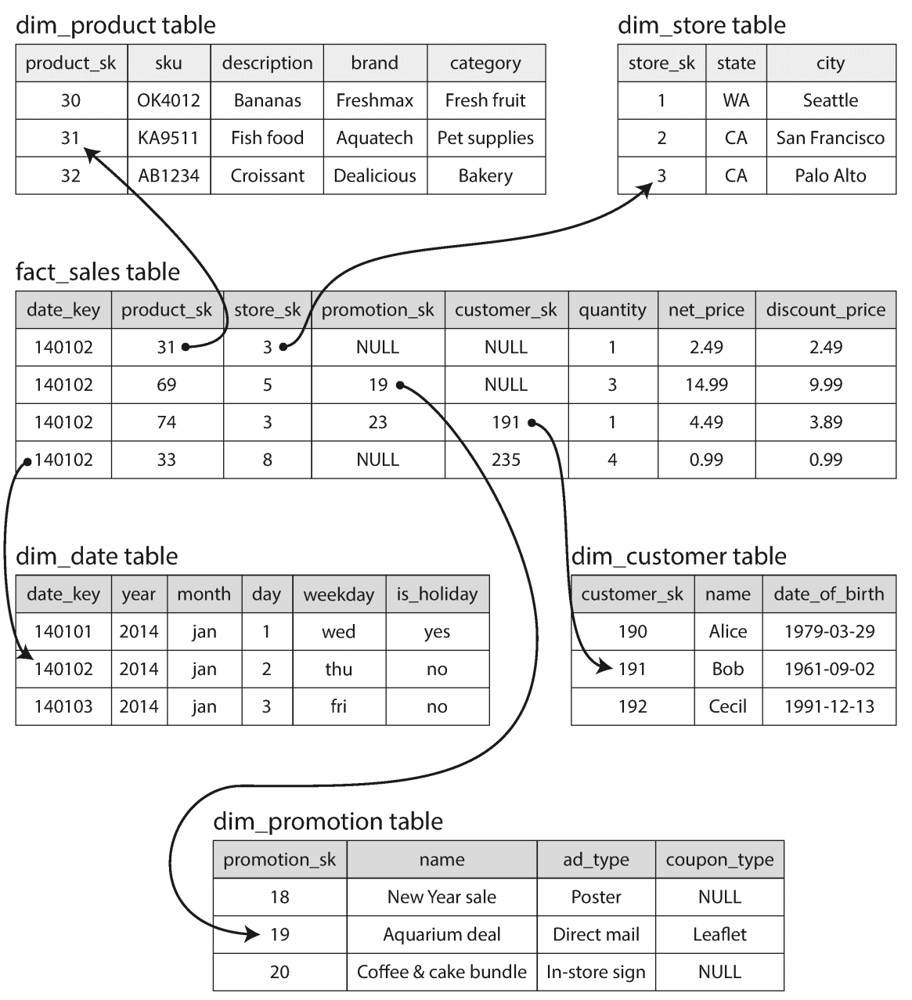
Usually, facts are captured as individual events, because this allows maximum flexibility of analysis later. However, this means that the fact table can become extremely large. A big enterprise like Apple, Walmart, or eBay may have tens of petabytes of transaction history in its data warehouse, most of which is in fact tables [56 ].
Some of the columns in the fact table are attributes, such as the price at which the product was sold and the cost of buying it from the supplier (allowing the profit margin to be calculated). Other columns in the fact table are foreign key references to other tables, called dimension tables . As each row in the fact table represents an event, the dimensions represent the who , what , where , when , how , and why of the event.
For example, in Figure 3-9
, one of the dimensions is the product that was sold. Each row in the dim_product
table represents one type of product that is for sale, including its stock-keeping unit (SKU), description, brand name, category, fat content, package size, etc. Each row in the fact_sales
table uses a foreign key to indicate which product was sold in that particular transaction. (For simplicity, if the customer buys several different products at once, they are represented as separate rows in the fact table.)
Even date and time are often represented using dimension tables, because this allows additional information about dates (such as public holidays) to be encoded, allowing queries to differentiate between sales on holidays and non-holidays.
The name “star schema” comes from the fact that when the table relationships are visualized, the fact table is in the middle, surrounded by its dimension tables; the connections to these tables are like the rays of a star.
A variation of this template is known as the snowflake schema
, where dimensions are further broken down into subdimensions. For example, there could be separate tables for brands and product categories, and each row in the dim_product
table could reference the brand and category as foreign keys, rather than storing them as strings in the dim_product
table. Snowflake schemas are more normalized than star schemas, but star schemas are often preferred because they are simpler for analysts to work with [55
].
In a typical data warehouse, tables are often very wide: fact tables often have over 100 columns, sometimes several hundred [51
]. Dimension tables can also be very wide, as they include all the metadata that may be relevant for analysis — for example, the dim_store
table may include details of which services are offered at each store, whether it has an in-store bakery, the square footage, the date when the store was first opened, when it was last remodeled, how far it is from the nearest highway, etc.
If you have trillions of rows and petabytes of data in your fact tables, storing and querying them efficiently becomes a challenging problem. Dimension tables are usually much smaller (millions of rows), so in this section we will concentrate primarily on storage of facts.
Although fact tables are often over 100 columns wide, a typical data warehouse query only accesses 4 or 5 of them at one time ("SELECT *"
queries are rarely needed for analytics) [51
]. Take the query in Example 3-1
: it accesses a large number of rows (every occurrence of someone buying fruit or candy during the 2013 calendar year), but it only needs to access three columns of the fact_sales
table: date_key
,
product_sk
, and quantity
. The query ignores all other columns.
SELECTdim_date.weekday,dim_product.category,SUM(fact_sales.quantity)ASquantity_soldFROMfact_salesJOINdim_dateONfact_sales.date_key=dim_date.date_keyJOINdim_productONfact_sales.product_sk=dim_product.product_skWHEREdim_date.year=2013ANDdim_product.categoryIN('Fresh fruit','Candy')GROUPBYdim_date.weekday,dim_product.category;
How can we execute this query efficiently?
In most OLTP databases, storage is laid out in a row-oriented fashion: all the values from one row of a table are stored next to each other. Document databases are similar: an entire document is typically stored as one contiguous sequence of bytes. You can see this in the CSV example of Figure 3-1 .
In order to process a query like Example 3-1
, you may have indexes on fact_sales.date_key
and/or fact_sales.product_sk
that tell the storage engine where to find all the sales for a particular date or for a particular product. But then, a row-oriented storage engine still needs to load all of those rows (each consisting of over 100 attributes) from disk into memory, parse them, and filter out those that don’t meet the required conditions. That can take a long time.
The idea behind column-oriented storage is simple: don’t store all the values from one row together, but store all the values from each column together instead. If each column is stored in a separate file, a query only needs to read and parse those columns that are used in that query, which can save a lot of work. This principle is illustrated in Figure 3-10 .
Column storage is easiest to understand in a relational data model, but it applies equally to nonrelational data. For example, Parquet [57 ] is a columnar storage format that supports a document data model, based on Google’s Dremel [54 ].
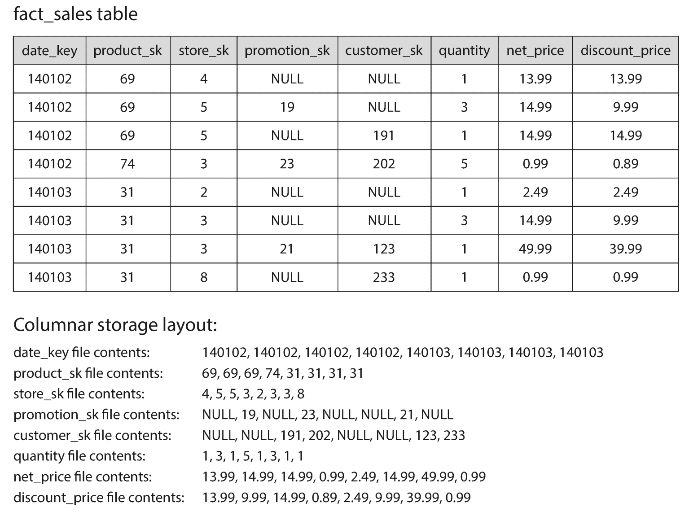
The column-oriented storage layout relies on each column file containing the rows in the same order. Thus, if you need to reassemble an entire row, you can take the 23rd entry from each of the individual column files and put them together to form the 23rd row of the table.
Besides only loading those columns from disk that are required for a query, we can further reduce the demands on disk throughput by compressing data. Fortunately, column-oriented storage often lends itself very well to compression.
Take a look at the sequences of values for each column in Figure 3-10 : they often look quite repetitive, which is a good sign for compression. Depending on the data in the column, different compression techniques can be used. One technique that is particularly effective in data warehouses is bitmap encoding , illustrated in Figure 3-11 .
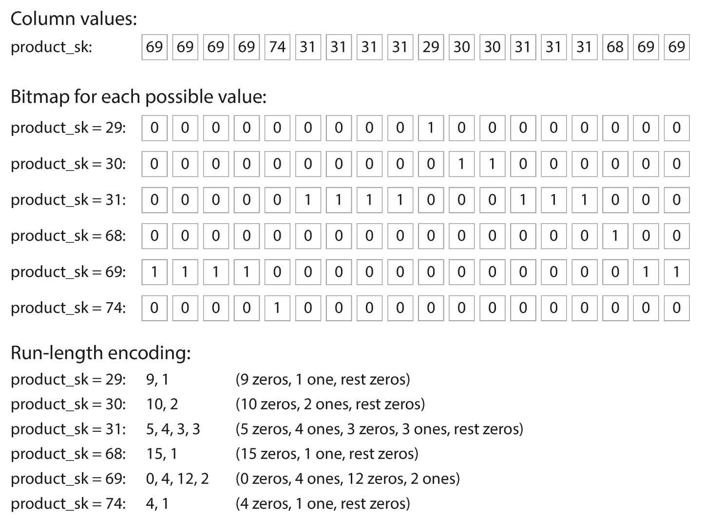
Often, the number of distinct values in a column is small compared to the number of rows (for example, a retailer may have billions of sales transactions, but only 100,000 distinct products). We can now take a column with n distinct values and turn it into n separate bitmaps: one bitmap for each distinct value, with one bit for each row. The bit is 1 if the row has that value, and 0 if not.
If n is very small (for example, a country column may have approximately 200 distinct values), those bitmaps can be stored with one bit per row. But if n is bigger, there will be a lot of zeros in most of the bitmaps (we say that they are sparse ). In that case, the bitmaps can additionally be run-length encoded, as shown at the bottom of Figure 3-11 . This can make the encoding of a column remarkably compact.
Bitmap indexes such as these are very well suited for the kinds of queries that are common in a data warehouse. For example:
WHERE product_sk IN (30, 68, 69):
Load the three bitmaps forproduct_sk = 30,product_sk = 68, andproduct_sk = 69, and calculate the bitwise OR of the three bitmaps, which can be done very efficiently.
WHERE product_sk = 31 AND store_sk = 3:
Load the bitmaps forproduct_sk = 31andstore_sk = 3, and calculate the bitwise AND . This works because the columns contain the rows in the same order, so the k th bit in one column’s bitmap corresponds to the same row as the k th bit in another column’s bitmap.
There are also various other compression schemes for different kinds of data, but we won’t go into them in detail — see [58 ] for an overview.
Cassandra and HBase have a concept of column families , which they inherited from Bigtable [9 ]. However, it is very misleading to call them column-oriented: within each column family, they store all columns from a row together, along with a row key, and they do not use column compression. Thus, the Bigtable model is still mostly row-oriented.
For data warehouse queries that need to scan over millions of rows, a big bottleneck is the bandwidth for getting data from disk into memory. However, that is not the only bottleneck. Developers of analytical databases also worry about efficiently using the bandwidth from main memory into the CPU cache, avoiding branch mispredictions and bubbles in the CPU instruction processing pipeline, and making use of single-instruction-multi-data (SIMD) instructions in modern CPUs [59 , 60 ].
Besides reducing the volume of data that needs to be loaded from disk, column-oriented storage layouts are also good for making efficient use of CPU cycles. For example, the query engine can take a chunk of compressed column data that fits comfortably in the CPU’s L1 cache and iterate through it in a tight loop (that is, with no function calls). A CPU can execute such a loop much faster than code that requires a lot of function calls and conditions for each record that is processed. Column compression allows more rows from a column to fit in the same amount of L1 cache. Operators, such as the bitwise AND and OR described previously, can be designed to operate on such chunks of compressed column data directly. This technique is known as vectorized processing [58 , 49 ].
In a column store, it doesn’t necessarily matter in which order the rows are stored. It’s easiest to store them in the order in which they were inserted, since then inserting a new row just means appending to each of the column files. However, we can choose to impose an order, like we did with SSTables previously, and use that as an indexing mechanism.
Note that it wouldn’t make sense to sort each column independently, because then we would no longer know which items in the columns belong to the same row. We can only reconstruct a row because we know that the k th item in one column belongs to the same row as the k th item in another column.
Rather, the data needs to be sorted an entire row at a time, even though it is stored by column. The administrator of the database can choose the columns by which the table should be sorted, using their knowledge of common queries. For example, if queries often target date ranges, such as the last month, it might make sense to make date_key
the first sort key. Then the query optimizer can scan only the rows from the last month, which will be much faster than scanning all rows.
A second column can determine the sort order of any rows that have the same value in the first column. For example, if date_key
is the first sort key in Figure 3-10
, it might make sense for product_sk
to be the second sort key so that all sales for the same product on the same day are grouped together in storage. That will help queries that need to group or filter sales by product within a certain date range.
Another advantage of sorted order is that it can help with compression of columns. If the primary sort column does not have many distinct values, then after sorting, it will have long sequences where the same value is repeated many times in a row. A simple run-length encoding, like we used for the bitmaps in Figure 3-11 , could compress that column down to a few kilobytes — even if the table has billions of rows.
That compression effect is strongest on the first sort key. The second and third sort keys will be more jumbled up, and thus not have such long runs of repeated values. Columns further down the sorting priority appear in essentially random order, so they probably won’t compress as well. But having the first few columns sorted is still a win overall.
A clever extension of this idea was introduced in C-Store and adopted in the commercial data warehouse Vertica [61 , 62 ]. Different queries benefit from different sort orders, so why not store the same data sorted in several different ways? Data needs to be replicated to multiple machines anyway, so that you don’t lose data if one machine fails. You might as well store that redundant data sorted in different ways so that when you’re processing a query, you can use the version that best fits the query pattern.
Having multiple sort orders in a column-oriented store is a bit similar to having multiple secondary indexes in a row-oriented store. But the big difference is that the row-oriented store keeps every row in one place (in the heap file or a clustered index), and secondary indexes just contain pointers to the matching rows. In a column store, there normally aren’t any pointers to data elsewhere, only columns containing values.
These optimizations make sense in data warehouses, because most of the load consists of large read-only queries run by analysts. Column-oriented storage, compression, and sorting all help to make those read queries faster. However, they have the downside of making writes more difficult.
An update-in-place approach, like B-trees use, is not possible with compressed columns. If you wanted to insert a row in the middle of a sorted table, you would most likely have to rewrite all the column files. As rows are identified by their position within a column, the insertion has to update all columns consistently.
Fortunately, we have already seen a good solution earlier in this chapter: LSM-trees. All writes first go to an in-memory store, where they are added to a sorted structure and prepared for writing to disk. It doesn’t matter whether the in-memory store is row-oriented or column-oriented. When enough writes have accumulated, they are merged with the column files on disk and written to new files in bulk. This is essentially what Vertica does [62 ].
Queries need to examine both the column data on disk and the recent writes in memory, and combine the two. However, the query optimizer hides this distinction from the user. From an analyst’s point of view, data that has been modified with inserts, updates, or deletes is immediately reflected in subsequent queries.
Not every data warehouse is necessarily a column store: traditional row-oriented databases and a few other architectures are also used. However, columnar storage can be significantly faster for ad hoc analytical queries, so it is rapidly gaining popularity [51 , 63 ].
Another aspect of data warehouses that is worth mentioning briefly is materialized aggregates
. As discussed earlier, data warehouse queries often involve an aggregate function, such as COUNT
, SUM
, AVG
, MIN
, or MAX
in SQL. If the same aggregates are used by many different queries, it can be wasteful to crunch through the raw data every time. Why not cache some of the counts or sums that queries use most often?
One way of creating such a cache is a materialized view . In a relational data model, it is often defined like a standard (virtual) view: a table-like object whose contents are the results of some query. The difference is that a materialized view is an actual copy of the query results, written to disk, whereas a virtual view is just a shortcut for writing queries. When you read from a virtual view, the SQL engine expands it into the view’s underlying query on the fly and then processes the expanded query.
When the underlying data changes, a materialized view needs to be updated, because it is a denormalized copy of the data. The database can do that automatically, but such updates make writes more expensive, which is why materialized views are not often used in OLTP databases. In read-heavy data warehouses they can make more sense (whether or not they actually improve read performance depends on the individual case).
A common special case of a materialized view is known as a data cube or OLAP cube [64 ]. It is a grid of aggregates grouped by different dimensions. Figure 3-12 shows an example.
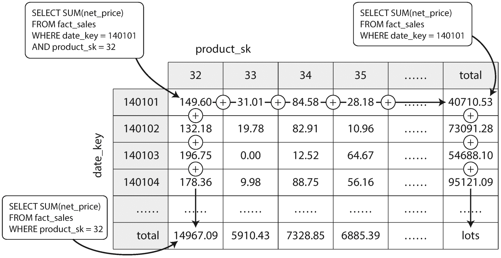
Imagine for now that each fact has foreign keys to only two dimension tables — in Figure 3-12
, these are date
and product
. You can now draw a two-dimensional table, with dates along one axis and products along the other. Each cell contains the aggregate (e.g., SUM
) of an attribute (e.g., net_price
) of all facts with that date-product combination. Then you can apply the same aggregate along each row or column and get a summary that has been reduced by one dimension (the sales by product regardless of date, or the sales by date regardless of product).
In general, facts often have more than two dimensions. In Figure 3-9 there are five dimensions: date, product, store, promotion, and customer. It’s a lot harder to imagine what a five-dimensional hypercube would look like, but the principle remains the same: each cell contains the sales for a particular date-product-store-promotion-customer combination. These values can then repeatedly be summarized along each of the dimensions.
The advantage of a materialized data cube is that certain queries become very fast because they have effectively been precomputed. For example, if you want to know the total sales per store yesterday, you just need to look at the totals along the appropriate dimension — no need to scan millions of rows.
The disadvantage is that a data cube doesn’t have the same flexibility as querying the raw data. For example, there is no way of calculating which proportion of sales comes from items that cost more than $100, because the price isn’t one of the dimensions. Most data warehouses therefore try to keep as much raw data as possible, and use aggregates such as data cubes only as a performance boost for certain queries.
In this chapter we tried to get to the bottom of how databases handle storage and retrieval. What happens when you store data in a database, and what does the database do when you query for the data again later?
On a high level, we saw that storage engines fall into two broad categories: those optimized for transaction processing (OLTP), and those optimized for analytics (OLAP). There are big differences between the access patterns in those use cases:
On the OLTP side, we saw storage engines from two main schools of thought:
Log-structured storage engines are a comparatively recent development. Their key idea is that they systematically turn random-access writes into sequential writes on disk, which enables higher write throughput due to the performance characteristics of hard drives and SSDs.
Finishing off the OLTP side, we did a brief tour through some more complicated indexing structures, and databases that are optimized for keeping all data in memory.
We then took a detour from the internals of storage engines to look at the high-level architecture of a typical data warehouse. This background illustrated why analytic workloads are so different from OLTP: when your queries require sequentially scanning across a large number of rows, indexes are much less relevant. Instead it becomes important to encode data very compactly, to minimize the amount of data that the query needs to read from disk. We discussed how column-oriented storage helps achieve this goal.
As an application developer, if you’re armed with this knowledge about the internals of storage engines, you are in a much better position to know which tool is best suited for your particular application. If you need to adjust a database’s tuning parameters, this understanding allows you to imagine what effect a higher or a lower value may have.
Although this chapter couldn’t make you an expert in tuning any one particular storage engine, it has hopefully equipped you with enough vocabulary and ideas that you can make sense of the documentation for the database of your choice.
i If all keys and values had a fixed size, you could use binary search on a segment file and avoid the in-memory index entirely. However, they are usually variable-length in practice, which makes it difficult to tell where one record ends and the next one starts if you don’t have an index.
ii Inserting a new key into a B-tree is reasonably intuitive, but deleting one (while keeping the tree balanced) is somewhat more involved [2 ].
iii This variant is sometimes known as a B+ tree, although the optimization is so common that it often isn’t distinguished from other B-tree variants.
iv The meaning of online in OLAP is unclear; it probably refers to the fact that queries are not just for predefined reports, but that analysts use the OLAP system interactively for explorative queries.
[1 ] Alfred V. Aho, John E. Hopcroft, and Jeffrey D. Ullman: Data Structures and Algorithms . Addison-Wesley, 1983. ISBN: 978-0-201-00023-8
[2 ] Thomas H. Cormen, Charles E. Leiserson, Ronald L. Rivest, and Clifford Stein: Introduction to Algorithms , 3rd edition. MIT Press, 2009. ISBN: 978-0-262-53305-8
[3 ] Justin Sheehy and David Smith: “Bitcask: A Log-Structured Hash Table for Fast Key/Value Data ,” Basho Technologies, April 2010.
[4 ] Yinan Li, Bingsheng He, Robin Jun Yang, et al.: “Tree Indexing on Solid State Drives ,” Proceedings of the VLDB Endowment , volume 3, number 1, pages 1195–1206, September 2010.
[5 ] Goetz Graefe: “Modern B-Tree Techniques ,” Foundations and Trends in Databases , volume 3, number 4, pages 203–402, August 2011. doi:10.1561/1900000028
[6 ] Jeffrey Dean and Sanjay Ghemawat: “LevelDB Implementation Notes ,” leveldb.googlecode.com .
[7 ] Dhruba Borthakur: “The History of RocksDB ,” rocksdb.blogspot.com , November 24, 2013.
[8 ] Matteo Bertozzi: “Apache HBase I/O – HFile ,” blog.cloudera.com , June, 29 2012.
[9 ] Fay Chang, Jeffrey Dean, Sanjay Ghemawat, et al.: “Bigtable: A Distributed Storage System for Structured Data ,” at 7th USENIX Symposium on Operating System Design and Implementation (OSDI), November 2006.
[10 ] Patrick O’Neil, Edward Cheng, Dieter Gawlick, and Elizabeth O’Neil: “The Log-Structured Merge-Tree (LSM-Tree) ,” Acta Informatica , volume 33, number 4, pages 351–385, June 1996. doi:10.1007/s002360050048
[11 ] Mendel Rosenblum and John K. Ousterhout: “The Design and Implementation of a Log-Structured File System ,” ACM Transactions on Computer Systems , volume 10, number 1, pages 26–52, February 1992. doi:10.1145/146941.146943
[12 ] Adrien Grand: “What Is in a Lucene Index? ,” at Lucene/Solr Revolution , November 14, 2013.
[13 ] Deepak Kandepet: “Hacking Lucene — The Index Format ,” hackerlabs.org , October 1, 2011.
[14 ] Michael McCandless: “Visualizing Lucene’s Segment Merges ,” blog.mikemccandless.com , February 11, 2011.
[15 ] Burton H. Bloom: “Space/Time Trade-offs in Hash Coding with Allowable Errors ,” Communications of the ACM , volume 13, number 7, pages 422–426, July 1970. doi:10.1145/362686.362692
[16 ] “Operating Cassandra: Compaction ,” Apache Cassandra Documentation v4.0, 2016.
[17 ] Rudolf Bayer and Edward M. McCreight: “Organization and Maintenance of Large Ordered Indices ,” Boeing Scientific Research Laboratories, Mathematical and Information Sciences Laboratory, report no. 20, July 1970.
[18 ] Douglas Comer: “The Ubiquitous B-Tree ,” ACM Computing Surveys , volume 11, number 2, pages 121–137, June 1979. doi:10.1145/356770.356776
[19 ] Emmanuel Goossaert: “Coding for SSDs ,” codecapsule.com , February 12, 2014.
[20 ] C. Mohan and Frank Levine: “ARIES/IM: An Efficient and High Concurrency Index Management Method Using Write-Ahead Logging ,” at ACM International Conference on Management of Data (SIGMOD), June 1992. doi:10.1145/130283.130338
[21 ] Howard Chu: “LDAP at Lightning Speed ,” at Build Stuff ’14 , November 2014.
[22 ] Bradley C. Kuszmaul: “A Comparison of Fractal Trees to Log-Structured Merge (LSM) Trees ,” tokutek.com , April 22, 2014.
[23 ] Manos Athanassoulis, Michael S. Kester, Lukas M. Maas, et al.: “Designing Access Methods: The RUM Conjecture ,” at 19th International Conference on Extending Database Technology (EDBT), March 2016. doi:10.5441/002/edbt.2016.42
[24 ] Peter Zaitsev: “Innodb Double Write ,” percona.com , August 4, 2006.
[25 ] Tomas Vondra: “On the Impact of Full-Page Writes ,” blog.2ndquadrant.com , November 23, 2016.
[26 ] Mark Callaghan: “The Advantages of an LSM vs a B-Tree ,” smalldatum.blogspot.co.uk , January 19, 2016.
[27 ] Mark Callaghan: “Choosing Between Efficiency and Performance with RocksDB ,” at Code Mesh , November 4, 2016.
[28 ] Michi Mutsuzaki: “MySQL vs. LevelDB ,” github.com , August 2011.
[29 ] Benjamin Coverston, Jonathan Ellis, et al.: “CASSANDRA-1608: Redesigned Compaction , issues.apache.org , July 2011.
[30 ] Igor Canadi, Siying Dong, and Mark Callaghan: “RocksDB Tuning Guide ,” github.com , 2016.
[31 ] MySQL 5.7 Reference Manual . Oracle, 2014.
[32 ] Books Online for SQL Server 2012 . Microsoft, 2012.
[33 ] Joe Webb: “Using Covering Indexes to Improve Query Performance ,” simple-talk.com , 29 September 2008.
[34 ] Frank Ramsak, Volker Markl, Robert Fenk, et al.: “Integrating the UB-Tree into a Database System Kernel ,” at 26th International Conference on Very Large Data Bases (VLDB), September 2000.
[35 ] The PostGIS Development Group: “PostGIS 2.1.2dev Manual ,” postgis.net , 2014.
[36 ] Robert Escriva, Bernard Wong, and Emin Gün Sirer: “HyperDex: A Distributed, Searchable Key-Value Store ,” at ACM SIGCOMM Conference , August 2012. doi:10.1145/2377677.2377681
[37 ] Michael McCandless: “Lucene’s FuzzyQuery Is 100 Times Faster in 4.0 ,” blog.mikemccandless.com , March 24, 2011.
[38 ] Steffen Heinz, Justin Zobel, and Hugh E. Williams: “Burst Tries: A Fast, Efficient Data Structure for String Keys ,” ACM Transactions on Information Systems , volume 20, number 2, pages 192–223, April 2002. doi:10.1145/506309.506312
[39 ] Klaus U. Schulz and Stoyan Mihov: “Fast String Correction with Levenshtein Automata ,” International Journal on Document Analysis and Recognition , volume 5, number 1, pages 67–85, November 2002. doi:10.1007/s10032-002-0082-8
[40 ] Christopher D. Manning, Prabhakar Raghavan, and Hinrich Schütze: Introduction to Information Retrieval . Cambridge University Press, 2008. ISBN: 978-0-521-86571-5, available online at nlp.stanford.edu/IR-book
[41 ] Michael Stonebraker, Samuel Madden, Daniel J. Abadi, et al.: “The End of an Architectural Era (It’s Time for a Complete Rewrite) ,” at 33rd International Conference on Very Large Data Bases (VLDB), September 2007.
[42 ] “VoltDB Technical Overview White Paper ,” VoltDB, 2014.
[43 ] Stephen M. Rumble, Ankita Kejriwal, and John K. Ousterhout: “Log-Structured Memory for DRAM-Based Storage ,” at 12th USENIX Conference on File and Storage Technologies (FAST), February 2014.
[44 ] Stavros Harizopoulos, Daniel J. Abadi, Samuel Madden, and Michael Stonebraker: “OLTP Through the Looking Glass, and What We Found There ,” at ACM International Conference on Management of Data (SIGMOD), June 2008. doi:10.1145/1376616.1376713
[45 ] Justin DeBrabant, Andrew Pavlo, Stephen Tu, et al.: “Anti-Caching: A New Approach to Database Management System Architecture ,” Proceedings of the VLDB Endowment , volume 6, number 14, pages 1942–1953, September 2013.
[46 ] Joy Arulraj, Andrew Pavlo, and Subramanya R. Dulloor: “Let’s Talk About Storage & Recovery Methods for Non-Volatile Memory Database Systems ,” at ACM International Conference on Management of Data (SIGMOD), June 2015. doi:10.1145/2723372.2749441
[47 ] Edgar F. Codd, S. B. Codd, and C. T. Salley: “Providing OLAP to User-Analysts: An IT Mandate ,” E. F. Codd Associates, 1993.
[48 ] Surajit Chaudhuri and Umeshwar Dayal: “An Overview of Data Warehousing and OLAP Technology ,” ACM SIGMOD Record , volume 26, number 1, pages 65–74, March 1997. doi:10.1145/248603.248616
[49 ] Per-Åke Larson, Cipri Clinciu, Campbell Fraser, et al.: “Enhancements to SQL Server Column Stores ,” at ACM International Conference on Management of Data (SIGMOD), June 2013.
[50 ] Franz Färber, Norman May, Wolfgang Lehner, et al.: “The SAP HANA Database – An Architecture Overview ,” IEEE Data Engineering Bulletin , volume 35, number 1, pages 28–33, March 2012.
[51 ] Michael Stonebraker: “The Traditional RDBMS Wisdom Is (Almost Certainly) All Wrong ,” presentation at EPFL , May 2013.
[52 ] Daniel J. Abadi: “Classifying the SQL-on-Hadoop Solutions ,” hadapt.com , October 2, 2013.
[53 ] Marcel Kornacker, Alexander Behm, Victor Bittorf, et al.: “Impala: A Modern, Open-Source SQL Engine for Hadoop ,” at 7th Biennial Conference on Innovative Data Systems Research (CIDR), January 2015.
[54 ] Sergey Melnik, Andrey Gubarev, Jing Jing Long, et al.: “Dremel: Interactive Analysis of Web-Scale Datasets ,” at 36th International Conference on Very Large Data Bases (VLDB), pages 330–339, September 2010.
[55 ] Ralph Kimball and Margy Ross: The Data Warehouse Toolkit: The Definitive Guide to Dimensional Modeling , 3rd edition. John Wiley & Sons, July 2013. ISBN: 978-1-118-53080-1
[56 ] Derrick Harris: “Why Apple, eBay, and Walmart Have Some of the Biggest Data Warehouses You’ve Ever Seen ,” gigaom.com , March 27, 2013.
[57 ] Julien Le Dem: “Dremel Made Simple with Parquet ,” blog.twitter.com , September 11, 2013.
[58 ] Daniel J. Abadi, Peter Boncz, Stavros Harizopoulos, et al.: “The Design and Implementation of Modern Column-Oriented Database Systems ,” Foundations and Trends in Databases , volume 5, number 3, pages 197–280, December 2013. doi:10.1561/1900000024
[59 ] Peter Boncz, Marcin Zukowski, and Niels Nes: “MonetDB/X100: Hyper-Pipelining Query Execution ,” at 2nd Biennial Conference on Innovative Data Systems Research (CIDR), January 2005.
[60 ] Jingren Zhou and Kenneth A. Ross: “Implementing Database Operations Using SIMD Instructions ,” at ACM International Conference on Management of Data (SIGMOD), pages 145–156, June 2002. doi:10.1145/564691.564709
[61 ] Michael Stonebraker, Daniel J. Abadi, Adam Batkin, et al.: “C-Store: A Column-oriented DBMS ,” at 31st International Conference on Very Large Data Bases (VLDB), pages 553–564, September 2005.
[62 ] Andrew Lamb, Matt Fuller, Ramakrishna Varadarajan, et al.: “The Vertica Analytic Database: C-Store 7 Years Later ,” Proceedings of the VLDB Endowment , volume 5, number 12, pages 1790–1801, August 2012.
[63 ] Julien Le Dem and Nong Li: “Efficient Data Storage for Analytics with Apache Parquet 2.0 ,” at Hadoop Summit , San Jose, June 2014.
[64 ] Jim Gray, Surajit Chaudhuri, Adam Bosworth, et al.: “Data Cube: A Relational Aggregation Operator Generalizing Group-By, Cross-Tab, and Sub-Totals ,” Data Mining and Knowledge Discovery , volume 1, number 1, pages 29–53, March 2007. doi:10.1023/A:1009726021843